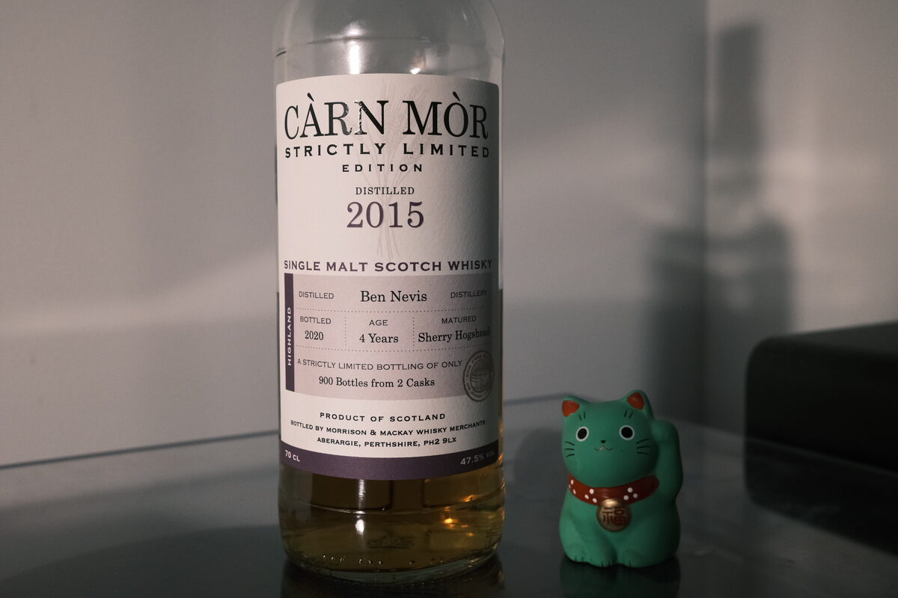

Ben Nevis 2015 Càrn Mòr 4 years 47.5% (sherry hogshead)
Ben Nevis again! This time another youngster. A vatting of two casks, presumably both sherry hogsheads. Weirdly high outturn of bottles though, 900 bottles. Aren’t hogsheads around 250 litres? Even assuming zero angel’s share…
Colour Amber.
Nose Dirty, earthy, and oily. Think deep fryer. A spread: pickled veggies, cheeses, nuts. Sherry: dried fruits, oak spices, brown sugar. A bit of an umami note, soy sauce. Big whack of cinnamon and cloves. Funky, yeasty… leather, ash. Thick oat porridge with a swirl of honey. Alcoholic, young, precocious.
Palate Milky malt, and into dried fruits: raisins, dates. Apricots. Almost a chewy, texture: fruit roll-up? Peat? Pretty hot for the ABV.
Finish A little boozy. Dried fruits again: raisins, dates. Black tea. Herbal and woody. A little leathery, meaty. Light smoke and ash. Puffed rice.
Comments Powerful, bold, uncomplicated. Delicious. May surprise some given the age, but there is an alcoholic edge. Nose is terrific, but the palate is a bit simple. 85/100.

Posted by Dominic on 06 May 2021